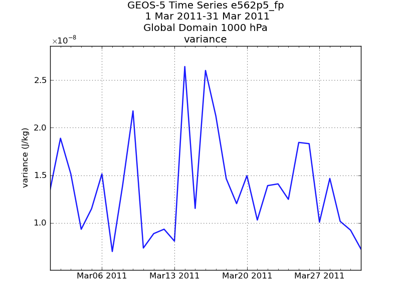
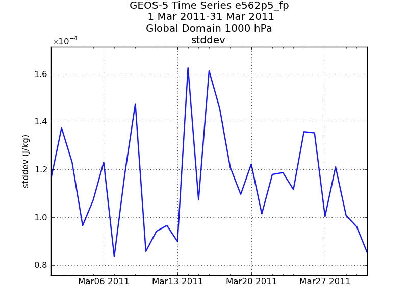

Whether you are a seasoned Python programmer or not, it may well be that if you would like to experiment with statistics and try to compute your own quantities, you will find that it is not very difficult to implement your own statistic in SemperPy within the context of the framework in standard cases. The good news is that when you write your own statistic even in a Python file in your home directory, it becomes completely part of the system:
- its name is known to the user
- it is stored in the database just like other statistics
- it is plotted automatically (unless it requires a very special plotting technique).
Statistics objects need to provide two main methods:
- compute_raw: compute intermediate results (if possible) using one or more variables from a source file (e.g. ODS, gridded data)
- compute_db: aggregate data for a final statistic using data which was just retrieved from the database.
In both cases, your statistic object will need to express requirements to the system:
- when computing from source files, which variables are required to compute the statistic
- when computing from the database, which intermediate results need to be retrieved for the final statistic to be formed.
Finally, within your statistic object, there are methods which are provided to help you sort out the data and generate the right output. It might be necessary for you to get familiar with the numpy package (http://www.numpy.org) to be able to “express” computations.
This tutorial will attempt to help you step by step to implement you own statistic class and integrate it into the system, but first, let’s take a look at an existing statistic: fraction of beneficial observation for beneficial. This statistic is quite simple, it is the ratio of observations which are beneficial to the system (the observation impact is less than or equal to 0) over the total number of observation. To compute this statistic we need a two step process:
- for each piece of data (one kt, one kx, one level, one date etc...) we need to count the number of observations and the number of values less than or equal to 0. We store these two quantities in the database.
- for each data retrieval from the database (SemperPy aggregates data according to user’s specification), we compute the total number of observations, the total number of observations with an impact less than or equal to 0 and finally return the ratio which is a percentage.
It can prove useful to keep an eye on the documentation of gmaopy.stats.statistics.Statistics while reading this tutorial.
The source file for this statistic:
Explanation:
- line 11: the official name of the statistic
- line 14: we override the standard unit associated with the data (J/kg) with percents, since it is a ratio
- line 17: the higher the statistic the better, so we need to tell the system so that plots, colorbars etc... will be oriented the right way
- line 22: variable is a numpy masked array containing all the values of impact for variable name (here the user specifies ‘xvec’)
- line 23: we count the number of impacts less than or equal to 0
- line 24: we remove masked (missing) values
- line 25 we call the storer with the values we computed (count is the total number of observations, value is the number of beneficial observations). variable.shape[0] is the size of the array passed to us, it is the total number of observations, a.shape[0] is the size of the array containing beneficial observations.
- lines 28 and 29: we use a utility method from the Statistic class to build numpy arrays, one for the number of beneficial observations, one for the total number of observations
- lines 30 and 31: it is possible that the arrays are empty, if the user specified a missing day or experiment, etc... In that case, we need to return an array of one value: the missing value.
- lines 32 to 34: we compute the ratio and return the result (it is a numpy array of one value).
- line 36: we register our statistic so that SemperPy integrates it into the system. Please note that our python file will need to be imported by the application, otherwise this registration wouldn’t happen.
note: we didn’t need to define the method requirements_db because by default it returns the name of the statistic we are implementing which is what we want. We just saw a relatively easy example of a statistic computing two components of the final result, one from the raw data, and one from the database.
Let’s implement a new statistic in the system, computing the variance. This is a good example because in the context of SemperPy it is a little more complicated than statistics like root mean square or mean because it requires two different sets of intermediate results to produce the final result.
Step one involves defining the statistic in the system and its characteristics (variance.py):
What we have done so far is:
- line 6: define the official name of the statistic: variance
- line 9: tell the system that to compute the variance from the intermediate results in the database, we need two different statistics: the sum and the sum of squares, both statistics exists
- line 11: we register the statistic in the system
Let’s check that what we have so far is working:
Please note:
- line 1: we import variance1 so that the statistic can register into SemperPy
- line 7: we use an unknown statistic name on purpose
The output:
... skiping stack dump ... IndexError: Unknown statistic "unknown" in category "obsstat", known: count, rms, beneficial, sum, impact_per_anl, count_per_anl, rate, impact_per_ob, sumsquare, esigb, variance, esigo, fractional_impact, normcost, concat, meanThis is a good sign, the system lists all the known statistics for that category, and variance is part of the list, so our statistic registered properly. Let’s now fix this and replace the unknown statistic with our variance and run it:
from variance1 import Variance from gmaopy.modules.obsstat import * obsstat( date = Dates(2011030100,2011033100,24), domain = ['global'], stats = ['variance'], type = 'im', expver = 'e562p5_fp', database = 'test_obsstat_exp', ignore_missing_files = True, overwrite = True, source = 'oper', obs = [ observation( kt = [4,5], kx = 220, variable = ['xvec'], ), ], )The output shows (this is run on a laptop so the paths displayed are different from the paths on NCCS):
no staging necessary ('/Users/claudegibert/Desktop/obs/impact/Y2011/M03/D01/H00/e562p5_fp.imp3_txe_conv.obs.20110228_15z+20110302_00z-20110301_00z.ods',) no staging necessary ('/Users/claudegibert/Desktop/obs/impact/Y2011/M03/D02/H00/e562p5_fp.imp3_txe_conv.obs.20110301_15z+20110303_00z-20110302_00z.ods',) no staging necessary ('/Users/claudegibert/Desktop/obs/impact/Y2011/M03/D03/H00/e562p5_fp.imp3_txe_conv.obs.20110302_15z+20110304_00z-20110303_00z.ods',) no staging necessary ('/Users/claudegibert/Desktop/obs/impact/Y2011/M03/D04/H00/e562p5_fp.imp3_txe_conv.obs.20110303_15z+20110305_00z-20110304_00z.ods',) no staging necessary ('/Users/claudegibert/Desktop/obs/impact/Y2011/M03/D05/H00/e562p5_fp.imp3_txe_conv.obs.20110304_15z+20110306_00z-20110305_00z.ods',) no staging necessary ('/Users/claudegibert/Desktop/obs/impact/Y2011/M03/D06/H00/e562p5_fp.imp3_txe_conv.obs.20110305_15z+20110307_00z-20110306_00z.ods',) no staging necessary ('/Users/claudegibert/Desktop/obs/impact/Y2011/M03/D07/H00/e562p5_fp.imp3_txe_conv.obs.20110306_15z+20110308_00z-20110307_00z.ods',) no staging necessary ('/Users/claudegibert/Desktop/obs/impact/Y2011/M03/D08/H00/e562p5_fp.imp3_txe_conv.obs.20110307_15z+20110309_00z-20110308_00z.ods',) no staging necessary ('/Users/claudegibert/Desktop/obs/impact/Y2011/M03/D09/H00/e562p5_fp.imp3_txe_conv.obs.20110308_15z+20110310_00z-20110309_00z.ods',) no staging necessary ('/Users/claudegibert/Desktop/obs/impact/Y2011/M03/D10/H00/e562p5_fp.imp3_txe_conv.obs.20110309_15z+20110311_00z-20110310_00z.ods',) no staging necessary ('/Users/claudegibert/Desktop/obs/impact/Y2011/M03/D11/H00/e562p5_fp.imp3_txe_conv.obs.20110310_15z+20110312_00z-20110311_00z.ods',) no staging necessary ('/Users/claudegibert/Desktop/obs/impact/Y2011/M03/D12/H00/e562p5_fp.imp3_txe_conv.obs.20110311_15z+20110313_00z-20110312_00z.ods',) no staging necessary ('/Users/claudegibert/Desktop/obs/impact/Y2011/M03/D13/H00/e562p5_fp.imp3_txe_conv.obs.20110312_15z+20110314_00z-20110313_00z.ods',) no staging necessary ('/Users/claudegibert/Desktop/obs/impact/Y2011/M03/D14/H00/e562p5_fp.imp3_txe_conv.obs.20110313_15z+20110315_00z-20110314_00z.ods',) no staging necessary ('/Users/claudegibert/Desktop/obs/impact/Y2011/M03/D15/H00/e562p5_fp.imp3_txe_conv.obs.20110314_15z+20110316_00z-20110315_00z.ods',) no staging necessary ('/Users/claudegibert/Desktop/obs/impact/Y2011/M03/D16/H00/e562p5_fp.imp3_txe_conv.obs.20110315_15z+20110317_00z-20110316_00z.ods',) no staging necessary ('/Users/claudegibert/Desktop/obs/impact/Y2011/M03/D17/H00/e562p5_fp.imp3_txe_conv.obs.20110316_15z+20110318_00z-20110317_00z.ods',) no staging necessary ('/Users/claudegibert/Desktop/obs/impact/Y2011/M03/D18/H00/e562p5_fp.imp3_txe_conv.obs.20110317_15z+20110319_00z-20110318_00z.ods',) no staging necessary ('/Users/claudegibert/Desktop/obs/impact/Y2011/M03/D19/H00/e562p5_fp.imp3_txe_conv.obs.20110318_15z+20110320_00z-20110319_00z.ods',) no staging necessary ('/Users/claudegibert/Desktop/obs/impact/Y2011/M03/D20/H00/e562p5_fp.imp3_txe_conv.obs.20110319_15z+20110321_00z-20110320_00z.ods',) no staging necessary ('/Users/claudegibert/Desktop/obs/impact/Y2011/M03/D21/H00/e562p5_fp.imp3_txe_conv.obs.20110320_15z+20110322_00z-20110321_00z.ods',) no staging necessary ('/Users/claudegibert/Desktop/obs/impact/Y2011/M03/D22/H00/e562p5_fp.imp3_txe_conv.obs.20110321_15z+20110323_00z-20110322_00z.ods',) no staging necessary ('/Users/claudegibert/Desktop/obs/impact/Y2011/M03/D23/H00/e562p5_fp.imp3_txe_conv.obs.20110322_15z+20110324_00z-20110323_00z.ods',) no staging necessary ('/Users/claudegibert/Desktop/obs/impact/Y2011/M03/D24/H00/e562p5_fp.imp3_txe_conv.obs.20110323_15z+20110325_00z-20110324_00z.ods',) no staging necessary ('/Users/claudegibert/Desktop/obs/impact/Y2011/M03/D25/H00/e562p5_fp.imp3_txe_conv.obs.20110324_15z+20110326_00z-20110325_00z.ods',) no staging necessary ('/Users/claudegibert/Desktop/obs/impact/Y2011/M03/D26/H00/e562p5_fp.imp3_txe_conv.obs.20110325_15z+20110327_00z-20110326_00z.ods',) no staging necessary ('/Users/claudegibert/Desktop/obs/impact/Y2011/M03/D27/H00/e562p5_fp.imp3_txe_conv.obs.20110326_15z+20110328_00z-20110327_00z.ods',) no staging necessary ('/Users/claudegibert/Desktop/obs/impact/Y2011/M03/D28/H00/e562p5_fp.imp3_txe_conv.obs.20110327_15z+20110329_00z-20110328_00z.ods',) flushed 2000 in database "test_obsstat_exp" overwrite mode no staging necessary ('/Users/claudegibert/Desktop/obs/impact/Y2011/M03/D29/H00/e562p5_fp.imp3_txe_conv.obs.20110328_15z+20110330_00z-20110329_00z.ods',) no staging necessary ('/Users/claudegibert/Desktop/obs/impact/Y2011/M03/D30/H00/e562p5_fp.imp3_txe_conv.obs.20110329_15z+20110331_00z-20110330_00z.ods',) no staging necessary ('/Users/claudegibert/Desktop/obs/impact/Y2011/M03/D31/H00/e562p5_fp.imp3_txe_conv.obs.20110330_15z+20110401_00z-20110331_00z.ods',) flushed 232 in database "test_obsstat_exp" overwrite modeWhat happened here? we didn’t even finish implementing the calculation of our statistic and the obsstat program runs and completes quite happily, having written results in the database. This is because the variance stated in line 12 that it relied on two different statistics which are computed on raw data: sum and sum of squares. So the variance is only invoked during plotting. If we check the database:
spy_sql test_obsstat_exp semper=#select distinct statistic from test_obsstat_exp.v_view where expver='e562p5_fp'; statistic ----------- sum sumsquare (2 rows)Let’s prepare a plotting script (copied from example1 in Observation statistic - plotting):
import variance from gmaopy.modules.obsplot import * document( plotdata = obsdata( type = 'im', variable = 'xvec', domain = 'global', expver = 'e562p5_fp', level = 1000, statistic = 'variance', date = Dates(2011030100,2011033100,24), database = 'test_obsstat_exp' ), plot = timeseriesplot( curve = line( plotdata = obsdata( kx = 220, kt = [4,5], ) ) ), interactive = False, output = 'plotvariance.png' )If we run it, the expected result is obtained (the method compute_db used to calculate final statistics from the database has not been implemented, yet):
python plotvariance.py ... skip stack dump ... semperpy.core.exceptions.AbstractMethod: Method <function compute_db at 0x1071b3c80> is abstract, the subclass should implement itWe get this informative message, because in gmaopy.stats.statistics.Statistics, the method compute_db is declared as an abstractMethod. So it is now time to implement the actual calculation of the statistic please see the comments in the code:
def compute_db(self,columns, data, variable): # separate sums from sumsquares values = self.split(data[variable],columns['statistic']) # we expect two entries, sum and sumsquare, let's be careful if len(values) != 2 or not 'sum' in values or not 'sumsquare' in values: raise ValueError('could not find the statistics needed to compute the variance') # get all the values of sum and their number sums = self.data2np(values['sum'],columns['value']) sum_counts = self.data2np(values['sum'],columns['count']) # get all the values of squares of sum and their number sumsquares = self.data2np(values['sumsquare'],columns['value']) sumsquare_counts = self.data2np(values['sumsquare'],columns['count']) # compute the total counts sum_count = np.sum(sum_counts) sumsquare_count = np.sum(sumsquare_counts) # paranoia helps writing robust code, if we don't have the same number of sum and sumsquares # something went wrong, probably when populating the database, this result would be unreliable if sum_count != sumsquare_count: raise ValueError('Found a different number of sums and sum squares %d %d' % (sum_count,sumsquare_count)) # from now on we only need sum_count since we know it is equal to sumsquare_count # it is possible that no data was found, result should be reported missing if sum_count == 0: return self.array(self.missing_value) # just compute the result mean = np.sum(sums) / sum_count # we return an array of one element return self.array((sumsquare - (mean * mean)) / (sumcount - 1))Finally, the whole statistic in short without all the explanations and less step by step operations (variance.py):
import math import numpy as np from gmaopy.stats.statistics import Statistics class Variance(Statistics): def requirements_db(self): return ['sum','sumsquare'] def name(self): return 'variance' def compute_db(self,columns, data, variable): values = self.split(data[variable],columns['statistic']) if len(values) != 2 or not 'sum' in values or not 'sumsquare' in values: raise ValueError('could not find the statistics needed to compute the variance') sum = np.sum(self.data2np(values['sum'],columns['value'])) sum_count = np.sum(self.data2np(values['sum'],columns['count'])) sumsquare = np.sum(self.data2np(values['sumsquare'],columns['value'])) sumsquare_count = np.sum(self.data2np(values['sumsquare'],columns['count'])) if sum_count != sumsquare_count: raise ValueError('Found a different number of sums and sum squares %d %d' % (sum_count,sumsquare_count)) if sum_count == 1: return self.array(self.missing_value) mean = sum / sum_count return self.array((sumsquare - (mean * mean)) / (sumcount - 1)) Statistics.register('obsstat','variance',Variance)This is probably not too bad considering that it implements a new statistic in the system which is stored in the database and recognized by plotting scripts. If we replace the line:
import variance1with:
import varianceand run it we obtain:

Once we have the variance, we might also want to compute the standard deviation, but how can this be done without rewriting the calculations for the radiance? Object inheritance is probably the best approach in that case
Explanation:
- line 4: states that the StandardDeviation inherits from Variance (and therefore all its methods)
- line 7: we redefine the method name() to return the correct name
- line 10: we call the method compute_db from the Variance class and therefore obtain the variance.
- line 13: we finally apply the square root and return the result.
- line 17: Variance is a subclass of Statistics, therefore calling Statistics.register or Variance.register is equivalent.
If we run the script (plotstddev.py):

If we examine the code calculating the variance, there is nothing in there which is specific to observations. The method compute_db receives data from the database, whether those partial statistics were computed from a numpy array containing observations or a numpy array containing gridded data from a netcdf file, the code is the same for computing the variance. In that case, the same class can be used for computing the variance for different types of data. In order to make this work, you need to register the same Variance class under different groups:
Statistics.register('obsstat','variance',Variance) Statistics.register('product','variance',Variance)The same applies for the Standard Deviation.
{kind=link}
{kind=link}